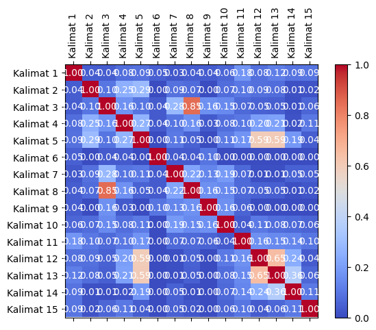
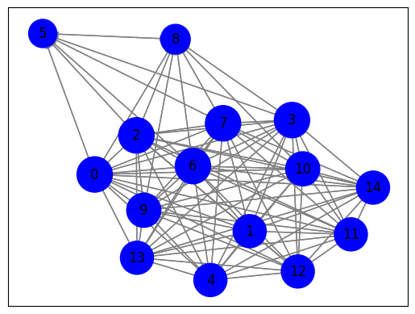
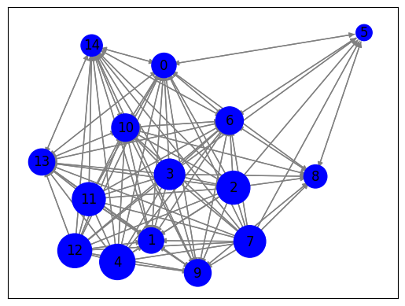

Tugas Berita#
import requests
from bs4 import BeautifulSoup
import nltk
# Unduh konten halaman web berita
url = "https://www.antaranews.com/berita/3799257/hoaks-kpu-tolak-pendaftaran-gibran-rakabuming-sebagai-bakal-cawapres-pada-25-oktober"
response = requests.get(url)
html = response.text
# Parsing halaman web menggunakan BeautifulSoup
soup = BeautifulSoup(html, 'html.parser')
# Ekstraksi teks dari elemen-elemen yang berisi berita
article = soup.find('div' ,class_="post-content clearfix") # Sesuaikan dengan struktur HTML halaman web berita
article_text = article.get_text()
# Tokenisasi teks menjadi kalimat menggunakan nltk
nltk.download('punkt') # Pastikan Anda sudah mengunduh tokenisasi kalimat nltk
sentences = nltk.sent_tokenize(article_text)
# Cetak kalimat-kalimat
for sentence in sentences:
print(sentence)
Jakarta (ANTARA/JACX) – Ketua Umum Partai Gerindra sekaligus bakal calon presiden Prabowo Subianto, secara resmi mengumumkan bahwa putra sulung Presiden Joko Widodo, Gibran Rakabuming Raka, telah dipilih sebagai bakal cawapres dari Partai Gerindra pada Minggu, (22/10/2023).
Sebuah unggahan video di Facebook berdurasi delapan menit menarasikan bahwa KPU menolak pendaftaran Gibran karena dinyatakan cacat hukum.
Dalam video tersebut, narator juga menyebutkan pakar hukum tata negara Denny Indrayana menyebut putusan MK tentang syarat capres-cawapres tidak bisa dijadikan landasan hukum Gibran Rakabuming Raka dalam mendaftar Pilpres 2024.
Berikut narasi dalam unggahan tersebut:
“NEWS HARI INI ~ DINYATAKAN C4CAT HUKUM KPU TOL4K PENDAFTAN CAWAPRES GIBRAN-- - POLITIK TERBARU”
Namun, benarkah KPU menolak pendaftaran Gibran Rakabuming sebagai bakal cawapres?
Unggahan video hoaks yang menarasikan KPU tolak pendaftaran Gibran Rakabuming sebagai Cawapres pada 25 Oktober.
Faktanya, belum ada informasi resmi mengenai hal tersebut.
(Facebook)
Penjelasan:
Berdasarkan penelusuran, dalam video tersebut, narator hanya membacakan narasi dari laman CNN yang berjudul “Denny Indrayana: Putusan MK Tak Bisa Jadi Dasar Gibran Daftar Pilpres”.
Dalam artikel tersebut, Pakar hukum tata negara Denny Indrayana menyebut putusan Mahkamah Konstitusi (MK) tentang syarat capres-cawapres tidak bisa dijadikan landasan hukum Gibran Rakabuming Raka dalam mendaftar Pilpres 2024.
Denny beralasan ada konflik kepentingan Ketua MK Anwar Usman dalam putusan itu.
Download Apps CNN Indonesia sekarangn Anwar dengan Gibran-bakal cawapres yang bisa mendaftar karena putusan baru MK.
Selain itu, KPU telah menerima berkas pendaftaran Prabowo Subianto dan Gibran Rakabuming Raka sebagai bacapres dan bacawapres, Rabu (25/10), videonya bisa dilihat di laman ANTARA.
Dengan demikian, klaim KPU tolak pendaftaran Gibran Rakabuming sebagai Cawapres pada 25 Oktober merupakan hoaks.
Klaim: KPU tolak pendaftaran Gibran Rakabuming sebagai bakal cawapres pada 25 Oktober
Rating: Hoaks
Cek fakta: Hoaks!
Gibran mengundurkan diri dari PDIP dan bergabung dengan Prabowo pada 14 Oktober
Cek fakta: Hoaks!
Foto Jokowi temui Anies dan tawarkan Gibran jadi bakal cawapres
Baca juga: PDIP tunggu etika politik Gibran kembalikan Kartu Tanda AnggotaPewarta: Tim JACXEditor: Indriani COPYRIGHT © ANTARA 2023
[nltk_data] Downloading package punkt to /root/nltk_data...
[nltk_data] Package punkt is already up-to-date!
##TF-IDF
Index dalam bentuk angka
# Create a DataFrame to store TF-IDF values
import pandas as pd
from sklearn.feature_extraction.text import TfidfVectorizer
tfidf_df = pd.DataFrame()
# Create the TF-IDF vectorizer
vectorizer = TfidfVectorizer(stop_words='english')
tfidf_matrix = vectorizer.fit_transform(sentences)
# Extract feature names (words) and TF-IDF values
feature_names = vectorizer.get_feature_names_out()
tfidf_values = tfidf_matrix.toarray()
# Create a DataFrame from TF-IDF values
tfidf_df = pd.DataFrame(tfidf_values, columns=feature_names)
# Add a new column for sentences
tfidf_df['Kalimat'] = sentences
# Reorder columns to have 'Kalimat' at the beginning
tfidf_df = tfidf_df[['Kalimat'] + feature_names.tolist()]
# Display the resulting DataFrame
tfidf_df
| Kalimat | 10 | 14 | 2023 | 2024 | 22 | 25 | ada | anggotapewarta | anies | ... | tol4k | tolak | tunggu | umum | unggahan | usman | video | videonya | widodo | yang | |
|---|---|---|---|---|---|---|---|---|---|---|---|---|---|---|---|---|---|---|---|---|---|
| 0 | \n\r\nJakarta (ANTARA/JACX) – Ketua Umum Parta... | 0.143494 | 0.000000 | 0.143494 | 0.000000 | 0.165253 | 0.000000 | 0.000000 | 0.000000 | 0.000000 | ... | 0.000000 | 0.000000 | 0.000000 | 0.165253 | 0.000000 | 0.000000 | 0.000000 | 0.000000 | 0.165253 | 0.000000 |
| 1 | Sebuah unggahan video di Facebook berdurasi de... | 0.000000 | 0.000000 | 0.000000 | 0.000000 | 0.000000 | 0.000000 | 0.000000 | 0.000000 | 0.000000 | ... | 0.000000 | 0.000000 | 0.000000 | 0.000000 | 0.217406 | 0.000000 | 0.197076 | 0.000000 | 0.000000 | 0.000000 |
| 2 | Dalam video tersebut, narator juga menyebutkan... | 0.000000 | 0.000000 | 0.000000 | 0.194200 | 0.000000 | 0.000000 | 0.000000 | 0.000000 | 0.000000 | ... | 0.000000 | 0.000000 | 0.000000 | 0.000000 | 0.000000 | 0.000000 | 0.157101 | 0.000000 | 0.000000 | 0.000000 |
| 3 | Berikut narasi dalam unggahan tersebut:\n“NEWS... | 0.000000 | 0.000000 | 0.000000 | 0.000000 | 0.000000 | 0.000000 | 0.000000 | 0.000000 | 0.000000 | ... | 0.228351 | 0.000000 | 0.000000 | 0.000000 | 0.176952 | 0.000000 | 0.000000 | 0.000000 | 0.000000 | 0.000000 |
| 4 | Unggahan video hoaks yang menarasikan KPU tola... | 0.000000 | 0.000000 | 0.000000 | 0.000000 | 0.000000 | 0.272939 | 0.000000 | 0.000000 | 0.000000 | ... | 0.000000 | 0.301095 | 0.000000 | 0.000000 | 0.301095 | 0.000000 | 0.272939 | 0.000000 | 0.000000 | 0.301095 |
| 5 | Faktanya, belum ada informasi resmi mengenai h... | 0.000000 | 0.000000 | 0.000000 | 0.000000 | 0.000000 | 0.000000 | 0.330048 | 0.000000 | 0.000000 | ... | 0.000000 | 0.000000 | 0.000000 | 0.000000 | 0.000000 | 0.000000 | 0.000000 | 0.000000 | 0.000000 | 0.000000 |
| 6 | (Facebook)\n\nPenjelasan:\r\n\r\nBerdasarkan p... | 0.000000 | 0.000000 | 0.000000 | 0.000000 | 0.000000 | 0.000000 | 0.000000 | 0.000000 | 0.000000 | ... | 0.000000 | 0.000000 | 0.000000 | 0.000000 | 0.000000 | 0.000000 | 0.160658 | 0.000000 | 0.000000 | 0.177231 |
| 7 | Dalam artikel tersebut, Pakar hukum tata negar... | 0.000000 | 0.000000 | 0.000000 | 0.194207 | 0.000000 | 0.000000 | 0.000000 | 0.000000 | 0.000000 | ... | 0.000000 | 0.000000 | 0.000000 | 0.000000 | 0.000000 | 0.000000 | 0.000000 | 0.000000 | 0.000000 | 0.000000 |
| 8 | Denny beralasan ada konflik kepentingan Ketua ... | 0.000000 | 0.000000 | 0.000000 | 0.000000 | 0.000000 | 0.000000 | 0.293538 | 0.000000 | 0.000000 | ... | 0.000000 | 0.000000 | 0.000000 | 0.000000 | 0.000000 | 0.338048 | 0.000000 | 0.000000 | 0.000000 | 0.000000 |
| 9 | Download Apps CNN Indonesia sekarangn Anwar de... | 0.000000 | 0.000000 | 0.000000 | 0.000000 | 0.000000 | 0.000000 | 0.000000 | 0.000000 | 0.000000 | ... | 0.000000 | 0.000000 | 0.000000 | 0.000000 | 0.000000 | 0.000000 | 0.000000 | 0.000000 | 0.000000 | 0.232780 |
| 10 | Selain itu, KPU telah menerima berkas pendafta... | 0.199312 | 0.000000 | 0.000000 | 0.000000 | 0.000000 | 0.161236 | 0.000000 | 0.000000 | 0.000000 | ... | 0.000000 | 0.000000 | 0.000000 | 0.000000 | 0.000000 | 0.000000 | 0.000000 | 0.229534 | 0.000000 | 0.000000 |
| 11 | Dengan demikian, klaim KPU tolak pendaftaran G... | 0.000000 | 0.000000 | 0.000000 | 0.000000 | 0.000000 | 0.255991 | 0.000000 | 0.000000 | 0.000000 | ... | 0.000000 | 0.282399 | 0.000000 | 0.000000 | 0.000000 | 0.000000 | 0.000000 | 0.000000 | 0.000000 | 0.000000 |
| 12 | Klaim: KPU tolak pendaftaran Gibran Rakabuming... | 0.000000 | 0.000000 | 0.000000 | 0.000000 | 0.000000 | 0.229955 | 0.000000 | 0.000000 | 0.000000 | ... | 0.000000 | 0.253677 | 0.000000 | 0.000000 | 0.000000 | 0.000000 | 0.000000 | 0.000000 | 0.000000 | 0.000000 |
| 13 | Gibran mengundurkan diri dari PDIP dan bergabu... | 0.000000 | 0.313111 | 0.000000 | 0.000000 | 0.000000 | 0.000000 | 0.000000 | 0.000000 | 0.000000 | ... | 0.000000 | 0.000000 | 0.000000 | 0.000000 | 0.000000 | 0.000000 | 0.000000 | 0.000000 | 0.000000 | 0.000000 |
| 14 | Foto Jokowi temui Anies dan tawarkan Gibran ja... | 0.000000 | 0.000000 | 0.184482 | 0.000000 | 0.000000 | 0.000000 | 0.000000 | 0.212456 | 0.212456 | ... | 0.000000 | 0.000000 | 0.212456 | 0.000000 | 0.000000 | 0.000000 | 0.000000 | 0.000000 | 0.000000 | 0.000000 |
15 rows × 160 columns
Index dalam bentuk kalimat 1,2 dst
# Create a DataFrame to store TF-IDF values
tfidf_df = pd.DataFrame()
# Create the TF-IDF vectorizer
vectorizer = TfidfVectorizer(stop_words='english')
tfidf_matrix = vectorizer.fit_transform(sentences)
# Extract feature names (words) and TF-IDF values
feature_names = vectorizer.get_feature_names_out()
tfidf_values = tfidf_matrix.toarray()
# Create a DataFrame from TF-IDF values
tfidf_df = pd.DataFrame(tfidf_values, columns=feature_names)
# Add a new column for sentences
tfidf_df['Kalimat'] = sentences
# Reorder columns to have 'Kalimat' at the beginning
tfidf_df = tfidf_df[['Kalimat'] + feature_names.tolist()]
# Change the index to represent "Kalimat 1," "Kalimat 2," etc.
tfidf_df.index = [f'Kalimat {i+1}' for i in range(len(tfidf_df))]
# Display the resulting DataFrame
tfidf_df
| Kalimat | 10 | 14 | 2023 | 2024 | 22 | 25 | ada | anggotapewarta | anies | ... | tol4k | tolak | tunggu | umum | unggahan | usman | video | videonya | widodo | yang | |
|---|---|---|---|---|---|---|---|---|---|---|---|---|---|---|---|---|---|---|---|---|---|
| Kalimat 1 | \n\r\nJakarta (ANTARA/JACX) – Ketua Umum Parta... | 0.143494 | 0.000000 | 0.143494 | 0.000000 | 0.165253 | 0.000000 | 0.000000 | 0.000000 | 0.000000 | ... | 0.000000 | 0.000000 | 0.000000 | 0.165253 | 0.000000 | 0.000000 | 0.000000 | 0.000000 | 0.165253 | 0.000000 |
| Kalimat 2 | Sebuah unggahan video di Facebook berdurasi de... | 0.000000 | 0.000000 | 0.000000 | 0.000000 | 0.000000 | 0.000000 | 0.000000 | 0.000000 | 0.000000 | ... | 0.000000 | 0.000000 | 0.000000 | 0.000000 | 0.217406 | 0.000000 | 0.197076 | 0.000000 | 0.000000 | 0.000000 |
| Kalimat 3 | Dalam video tersebut, narator juga menyebutkan... | 0.000000 | 0.000000 | 0.000000 | 0.194200 | 0.000000 | 0.000000 | 0.000000 | 0.000000 | 0.000000 | ... | 0.000000 | 0.000000 | 0.000000 | 0.000000 | 0.000000 | 0.000000 | 0.157101 | 0.000000 | 0.000000 | 0.000000 |
| Kalimat 4 | Berikut narasi dalam unggahan tersebut:\n“NEWS... | 0.000000 | 0.000000 | 0.000000 | 0.000000 | 0.000000 | 0.000000 | 0.000000 | 0.000000 | 0.000000 | ... | 0.228351 | 0.000000 | 0.000000 | 0.000000 | 0.176952 | 0.000000 | 0.000000 | 0.000000 | 0.000000 | 0.000000 |
| Kalimat 5 | Unggahan video hoaks yang menarasikan KPU tola... | 0.000000 | 0.000000 | 0.000000 | 0.000000 | 0.000000 | 0.272939 | 0.000000 | 0.000000 | 0.000000 | ... | 0.000000 | 0.301095 | 0.000000 | 0.000000 | 0.301095 | 0.000000 | 0.272939 | 0.000000 | 0.000000 | 0.301095 |
| Kalimat 6 | Faktanya, belum ada informasi resmi mengenai h... | 0.000000 | 0.000000 | 0.000000 | 0.000000 | 0.000000 | 0.000000 | 0.330048 | 0.000000 | 0.000000 | ... | 0.000000 | 0.000000 | 0.000000 | 0.000000 | 0.000000 | 0.000000 | 0.000000 | 0.000000 | 0.000000 | 0.000000 |
| Kalimat 7 | (Facebook)\n\nPenjelasan:\r\n\r\nBerdasarkan p... | 0.000000 | 0.000000 | 0.000000 | 0.000000 | 0.000000 | 0.000000 | 0.000000 | 0.000000 | 0.000000 | ... | 0.000000 | 0.000000 | 0.000000 | 0.000000 | 0.000000 | 0.000000 | 0.160658 | 0.000000 | 0.000000 | 0.177231 |
| Kalimat 8 | Dalam artikel tersebut, Pakar hukum tata negar... | 0.000000 | 0.000000 | 0.000000 | 0.194207 | 0.000000 | 0.000000 | 0.000000 | 0.000000 | 0.000000 | ... | 0.000000 | 0.000000 | 0.000000 | 0.000000 | 0.000000 | 0.000000 | 0.000000 | 0.000000 | 0.000000 | 0.000000 |
| Kalimat 9 | Denny beralasan ada konflik kepentingan Ketua ... | 0.000000 | 0.000000 | 0.000000 | 0.000000 | 0.000000 | 0.000000 | 0.293538 | 0.000000 | 0.000000 | ... | 0.000000 | 0.000000 | 0.000000 | 0.000000 | 0.000000 | 0.338048 | 0.000000 | 0.000000 | 0.000000 | 0.000000 |
| Kalimat 10 | Download Apps CNN Indonesia sekarangn Anwar de... | 0.000000 | 0.000000 | 0.000000 | 0.000000 | 0.000000 | 0.000000 | 0.000000 | 0.000000 | 0.000000 | ... | 0.000000 | 0.000000 | 0.000000 | 0.000000 | 0.000000 | 0.000000 | 0.000000 | 0.000000 | 0.000000 | 0.232780 |
| Kalimat 11 | Selain itu, KPU telah menerima berkas pendafta... | 0.199312 | 0.000000 | 0.000000 | 0.000000 | 0.000000 | 0.161236 | 0.000000 | 0.000000 | 0.000000 | ... | 0.000000 | 0.000000 | 0.000000 | 0.000000 | 0.000000 | 0.000000 | 0.000000 | 0.229534 | 0.000000 | 0.000000 |
| Kalimat 12 | Dengan demikian, klaim KPU tolak pendaftaran G... | 0.000000 | 0.000000 | 0.000000 | 0.000000 | 0.000000 | 0.255991 | 0.000000 | 0.000000 | 0.000000 | ... | 0.000000 | 0.282399 | 0.000000 | 0.000000 | 0.000000 | 0.000000 | 0.000000 | 0.000000 | 0.000000 | 0.000000 |
| Kalimat 13 | Klaim: KPU tolak pendaftaran Gibran Rakabuming... | 0.000000 | 0.000000 | 0.000000 | 0.000000 | 0.000000 | 0.229955 | 0.000000 | 0.000000 | 0.000000 | ... | 0.000000 | 0.253677 | 0.000000 | 0.000000 | 0.000000 | 0.000000 | 0.000000 | 0.000000 | 0.000000 | 0.000000 |
| Kalimat 14 | Gibran mengundurkan diri dari PDIP dan bergabu... | 0.000000 | 0.313111 | 0.000000 | 0.000000 | 0.000000 | 0.000000 | 0.000000 | 0.000000 | 0.000000 | ... | 0.000000 | 0.000000 | 0.000000 | 0.000000 | 0.000000 | 0.000000 | 0.000000 | 0.000000 | 0.000000 | 0.000000 |
| Kalimat 15 | Foto Jokowi temui Anies dan tawarkan Gibran ja... | 0.000000 | 0.000000 | 0.184482 | 0.000000 | 0.000000 | 0.000000 | 0.000000 | 0.212456 | 0.212456 | ... | 0.000000 | 0.000000 | 0.212456 | 0.000000 | 0.000000 | 0.000000 | 0.000000 | 0.000000 | 0.000000 | 0.000000 |
15 rows × 160 columns
from sklearn.metrics.pairwise import cosine_similarity
from sklearn.feature_extraction.text import TfidfVectorizer
# Indeks kalimat yang akan dibandingkan
sentence1_index = 0 # Ganti dengan indeks kalimat pertama yang ingin Anda bandingkan
sentence2_index = 1 # Ganti dengan indeks kalimat kedua yang ingin Anda bandingkan
# Ambil vektor TF-IDF untuk kedua kalimat
tfidf_vector1 = tfidf_matrix[sentence1_index]
tfidf_vector2 = tfidf_matrix[sentence2_index]
# Hitung cosine similarity antara kedua vektor
similarity = cosine_similarity(tfidf_vector1, tfidf_vector2)
# Cetak hasil cosine similarity
print(f"Cosine Similarity antara Kalimat {sentence1_index + 1} dan Kalimat {sentence2_index + 1}: {similarity[0][0]:.4f}")
Cosine Similarity antara Kalimat 1 dan Kalimat 2: 0.0412
# Matriks TF-IDF telah dihitung sebelumnya (tfidf_matrix)
# Hitung cosine similarity antara semua pasangan kalimat
similarity_matrix = cosine_similarity(tfidf_matrix, tfidf_matrix)
# Cetak hasil similarity_matrix
num_sentences = len(sentences) # Jumlah kalimat
for i in range(num_sentences):
for j in range(i+1, num_sentences):
similarity = similarity_matrix[i][j]
print(f"Cosine Similarity antara Kalimat {i + 1} dan Kalimat {j + 1}: {similarity:.4f}")
Cosine Similarity antara Kalimat 1 dan Kalimat 2: 0.0412
Cosine Similarity antara Kalimat 1 dan Kalimat 3: 0.0413
Cosine Similarity antara Kalimat 1 dan Kalimat 4: 0.0818
Cosine Similarity antara Kalimat 1 dan Kalimat 5: 0.0893
Cosine Similarity antara Kalimat 1 dan Kalimat 6: 0.0474
Cosine Similarity antara Kalimat 1 dan Kalimat 7: 0.0278
Cosine Similarity antara Kalimat 1 dan Kalimat 8: 0.0413
Cosine Similarity antara Kalimat 1 dan Kalimat 9: 0.0421
Cosine Similarity antara Kalimat 1 dan Kalimat 10: 0.0591
Cosine Similarity antara Kalimat 1 dan Kalimat 11: 0.1785
Cosine Similarity antara Kalimat 1 dan Kalimat 12: 0.0838
Cosine Similarity antara Kalimat 1 dan Kalimat 13: 0.1200
Cosine Similarity antara Kalimat 1 dan Kalimat 14: 0.0906
Cosine Similarity antara Kalimat 1 dan Kalimat 15: 0.0941
Cosine Similarity antara Kalimat 2 dan Kalimat 3: 0.1014
Cosine Similarity antara Kalimat 2 dan Kalimat 4: 0.2517
Cosine Similarity antara Kalimat 2 dan Kalimat 5: 0.2929
Cosine Similarity antara Kalimat 2 dan Kalimat 6: 0.0000
Cosine Similarity antara Kalimat 2 dan Kalimat 7: 0.0887
Cosine Similarity antara Kalimat 2 dan Kalimat 8: 0.0704
Cosine Similarity antara Kalimat 2 dan Kalimat 9: 0.0000
Cosine Similarity antara Kalimat 2 dan Kalimat 10: 0.0750
Cosine Similarity antara Kalimat 2 dan Kalimat 11: 0.1026
Cosine Similarity antara Kalimat 2 dan Kalimat 12: 0.0858
Cosine Similarity antara Kalimat 2 dan Kalimat 13: 0.0771
Cosine Similarity antara Kalimat 2 dan Kalimat 14: 0.0119
Cosine Similarity antara Kalimat 2 dan Kalimat 15: 0.0162
Cosine Similarity antara Kalimat 3 dan Kalimat 4: 0.1643
Cosine Similarity antara Kalimat 3 dan Kalimat 5: 0.0972
Cosine Similarity antara Kalimat 3 dan Kalimat 6: 0.0352
Cosine Similarity antara Kalimat 3 dan Kalimat 7: 0.2844
Cosine Similarity antara Kalimat 3 dan Kalimat 8: 0.8499
Cosine Similarity antara Kalimat 3 dan Kalimat 9: 0.1624
Cosine Similarity antara Kalimat 3 dan Kalimat 10: 0.1481
Cosine Similarity antara Kalimat 3 dan Kalimat 11: 0.0670
Cosine Similarity antara Kalimat 3 dan Kalimat 12: 0.0509
Cosine Similarity antara Kalimat 3 dan Kalimat 13: 0.0458
Cosine Similarity antara Kalimat 3 dan Kalimat 14: 0.0095
Cosine Similarity antara Kalimat 3 dan Kalimat 15: 0.0595
Cosine Similarity antara Kalimat 4 dan Kalimat 5: 0.2659
Cosine Similarity antara Kalimat 4 dan Kalimat 6: 0.0359
Cosine Similarity antara Kalimat 4 dan Kalimat 7: 0.0968
Cosine Similarity antara Kalimat 4 dan Kalimat 8: 0.1643
Cosine Similarity antara Kalimat 4 dan Kalimat 9: 0.0319
Cosine Similarity antara Kalimat 4 dan Kalimat 10: 0.0782
Cosine Similarity antara Kalimat 4 dan Kalimat 11: 0.1017
Cosine Similarity antara Kalimat 4 dan Kalimat 12: 0.1994
Cosine Similarity antara Kalimat 4 dan Kalimat 13: 0.2100
Cosine Similarity antara Kalimat 4 dan Kalimat 14: 0.0194
Cosine Similarity antara Kalimat 4 dan Kalimat 15: 0.1051
Cosine Similarity antara Kalimat 5 dan Kalimat 6: 0.0000
Cosine Similarity antara Kalimat 5 dan Kalimat 7: 0.1093
Cosine Similarity antara Kalimat 5 dan Kalimat 8: 0.0543
Cosine Similarity antara Kalimat 5 dan Kalimat 9: 0.0000
Cosine Similarity antara Kalimat 5 dan Kalimat 10: 0.1125
Cosine Similarity antara Kalimat 5 dan Kalimat 11: 0.1736
Cosine Similarity antara Kalimat 5 dan Kalimat 12: 0.5912
Cosine Similarity antara Kalimat 5 dan Kalimat 13: 0.5938
Cosine Similarity antara Kalimat 5 dan Kalimat 14: 0.1869
Cosine Similarity antara Kalimat 5 dan Kalimat 15: 0.0412
Cosine Similarity antara Kalimat 6 dan Kalimat 7: 0.0360
Cosine Similarity antara Kalimat 6 dan Kalimat 8: 0.0352
Cosine Similarity antara Kalimat 6 dan Kalimat 9: 0.0969
Cosine Similarity antara Kalimat 6 dan Kalimat 10: 0.0000
Cosine Similarity antara Kalimat 6 dan Kalimat 11: 0.0000
Cosine Similarity antara Kalimat 6 dan Kalimat 12: 0.0000
Cosine Similarity antara Kalimat 6 dan Kalimat 13: 0.0000
Cosine Similarity antara Kalimat 6 dan Kalimat 14: 0.0000
Cosine Similarity antara Kalimat 6 dan Kalimat 15: 0.0000
Cosine Similarity antara Kalimat 7 dan Kalimat 8: 0.2206
Cosine Similarity antara Kalimat 7 dan Kalimat 9: 0.1341
Cosine Similarity antara Kalimat 7 dan Kalimat 10: 0.1876
Cosine Similarity antara Kalimat 7 dan Kalimat 11: 0.0684
Cosine Similarity antara Kalimat 7 dan Kalimat 12: 0.0113
Cosine Similarity antara Kalimat 7 dan Kalimat 13: 0.0101
Cosine Similarity antara Kalimat 7 dan Kalimat 14: 0.0527
Cosine Similarity antara Kalimat 7 dan Kalimat 15: 0.0498
Cosine Similarity antara Kalimat 8 dan Kalimat 9: 0.1624
Cosine Similarity antara Kalimat 8 dan Kalimat 10: 0.1482
Cosine Similarity antara Kalimat 8 dan Kalimat 11: 0.0670
Cosine Similarity antara Kalimat 8 dan Kalimat 12: 0.0509
Cosine Similarity antara Kalimat 8 dan Kalimat 13: 0.0458
Cosine Similarity antara Kalimat 8 dan Kalimat 14: 0.0095
Cosine Similarity antara Kalimat 8 dan Kalimat 15: 0.0237
Cosine Similarity antara Kalimat 9 dan Kalimat 10: 0.1606
Cosine Similarity antara Kalimat 9 dan Kalimat 11: 0.0585
Cosine Similarity antara Kalimat 9 dan Kalimat 12: 0.0000
Cosine Similarity antara Kalimat 9 dan Kalimat 13: 0.0000
Cosine Similarity antara Kalimat 9 dan Kalimat 14: 0.0000
Cosine Similarity antara Kalimat 9 dan Kalimat 15: 0.0000
Cosine Similarity antara Kalimat 10 dan Kalimat 11: 0.0379
Cosine Similarity antara Kalimat 10 dan Kalimat 12: 0.1055
Cosine Similarity antara Kalimat 10 dan Kalimat 13: 0.0764
Cosine Similarity antara Kalimat 10 dan Kalimat 14: 0.0692
Cosine Similarity antara Kalimat 10 dan Kalimat 15: 0.0582
Cosine Similarity antara Kalimat 11 dan Kalimat 12: 0.1628
Cosine Similarity antara Kalimat 11 dan Kalimat 13: 0.1462
Cosine Similarity antara Kalimat 11 dan Kalimat 14: 0.1392
Cosine Similarity antara Kalimat 11 dan Kalimat 15: 0.1011
Cosine Similarity antara Kalimat 12 dan Kalimat 13: 0.6469
Cosine Similarity antara Kalimat 12 dan Kalimat 14: 0.2438
Cosine Similarity antara Kalimat 12 dan Kalimat 15: 0.0386
Cosine Similarity antara Kalimat 13 dan Kalimat 14: 0.3626
Cosine Similarity antara Kalimat 13 dan Kalimat 15: 0.0635
Cosine Similarity antara Kalimat 14 dan Kalimat 15: 0.1081
import pandas as pd
# Matriks TF-IDF telah dihitung sebelumnya (tfidf_matrix)
# Hitung cosine similarity antara semua pasangan kalimat
similarity_matrix = cosine_similarity(tfidf_matrix, tfidf_matrix)
# Nama kolom dan indeks untuk DataFrame
sentence_indices = [f"Kalimat {i + 1}" for i in range(len(sentences))]
# Buat DataFrame dari hasil cosine similarity
df = pd.DataFrame(similarity_matrix, columns=sentence_indices, index=sentence_indices)
# Cetak DataFrame
df
| Kalimat 1 | Kalimat 2 | Kalimat 3 | Kalimat 4 | Kalimat 5 | Kalimat 6 | Kalimat 7 | Kalimat 8 | Kalimat 9 | Kalimat 10 | Kalimat 11 | Kalimat 12 | Kalimat 13 | Kalimat 14 | Kalimat 15 | |
|---|---|---|---|---|---|---|---|---|---|---|---|---|---|---|---|
| Kalimat 1 | 1.000000 | 0.041239 | 0.041338 | 0.081805 | 0.089297 | 0.047360 | 0.027817 | 0.041340 | 0.042121 | 0.059117 | 0.178485 | 0.083752 | 0.120001 | 0.090561 | 0.094122 |
| Kalimat 2 | 0.041239 | 1.000000 | 0.101385 | 0.251681 | 0.292930 | 0.000000 | 0.088738 | 0.070426 | 0.000000 | 0.074965 | 0.102600 | 0.085805 | 0.077078 | 0.011903 | 0.016153 |
| Kalimat 3 | 0.041338 | 0.101385 | 1.000000 | 0.164272 | 0.097198 | 0.035173 | 0.284394 | 0.849904 | 0.162433 | 0.148147 | 0.066961 | 0.050946 | 0.045764 | 0.009488 | 0.059530 |
| Kalimat 4 | 0.081805 | 0.251681 | 0.164272 | 1.000000 | 0.265861 | 0.035912 | 0.096750 | 0.164278 | 0.031940 | 0.078233 | 0.101693 | 0.199382 | 0.210034 | 0.019376 | 0.105057 |
| Kalimat 5 | 0.089297 | 0.292930 | 0.097198 | 0.265861 | 1.000000 | 0.000000 | 0.109255 | 0.054321 | 0.000000 | 0.112501 | 0.173579 | 0.591212 | 0.593846 | 0.186886 | 0.041181 |
| Kalimat 6 | 0.047360 | 0.000000 | 0.035173 | 0.035912 | 0.000000 | 1.000000 | 0.035969 | 0.035174 | 0.096882 | 0.000000 | 0.000000 | 0.000000 | 0.000000 | 0.000000 | 0.000000 |
| Kalimat 7 | 0.027817 | 0.088738 | 0.284394 | 0.096750 | 0.109255 | 0.035969 | 1.000000 | 0.220595 | 0.134121 | 0.187649 | 0.068417 | 0.011293 | 0.010145 | 0.052705 | 0.049805 |
| Kalimat 8 | 0.041340 | 0.070426 | 0.849904 | 0.164278 | 0.054321 | 0.035174 | 0.220595 | 1.000000 | 0.162439 | 0.148153 | 0.066964 | 0.050948 | 0.045766 | 0.009489 | 0.023704 |
| Kalimat 9 | 0.042121 | 0.000000 | 0.162433 | 0.031940 | 0.000000 | 0.096882 | 0.134121 | 0.162439 | 1.000000 | 0.160601 | 0.058506 | 0.000000 | 0.000000 | 0.000000 | 0.000000 |
| Kalimat 10 | 0.059117 | 0.074965 | 0.148147 | 0.078233 | 0.112501 | 0.000000 | 0.187649 | 0.148153 | 0.160601 | 1.000000 | 0.037872 | 0.105515 | 0.076422 | 0.069224 | 0.058244 |
| Kalimat 11 | 0.178485 | 0.102600 | 0.066961 | 0.101693 | 0.173579 | 0.000000 | 0.068417 | 0.066964 | 0.058506 | 0.037872 | 1.000000 | 0.162800 | 0.146243 | 0.139209 | 0.101065 |
| Kalimat 12 | 0.083752 | 0.085805 | 0.050946 | 0.199382 | 0.591212 | 0.000000 | 0.011293 | 0.050948 | 0.000000 | 0.105515 | 0.162800 | 1.000000 | 0.646923 | 0.243801 | 0.038624 |
| Kalimat 13 | 0.120001 | 0.077078 | 0.045764 | 0.210034 | 0.593846 | 0.000000 | 0.010145 | 0.045766 | 0.000000 | 0.076422 | 0.146243 | 0.646923 | 1.000000 | 0.362603 | 0.063473 |
| Kalimat 14 | 0.090561 | 0.011903 | 0.009488 | 0.019376 | 0.186886 | 0.000000 | 0.052705 | 0.009489 | 0.000000 | 0.069224 | 0.139209 | 0.243801 | 0.362603 | 1.000000 | 0.108130 |
| Kalimat 15 | 0.094122 | 0.016153 | 0.059530 | 0.105057 | 0.041181 | 0.000000 | 0.049805 | 0.023704 | 0.000000 | 0.058244 | 0.101065 | 0.038624 | 0.063473 | 0.108130 | 1.000000 |
import pandas as pd
import numpy as np
import matplotlib.pyplot as plt
# Matriks TF-IDF telah dihitung sebelumnya (tfidf_matrix)
# Hitung cosine similarity antara semua pasangan kalimat
similarity_matrix = cosine_similarity(tfidf_matrix, tfidf_matrix)
# Nama kolom dan indeks untuk DataFrame
sentence_indices = [f"Kalimat {i + 1}" for i in range(len(sentences))]
# Buat DataFrame dari hasil cosine similarity
df = pd.DataFrame(similarity_matrix, columns=sentence_indices, index=sentence_indices)
# Membuat grafik matriks
fig, ax = plt.subplots()
cax = ax.matshow(df, cmap='coolwarm')
fig.colorbar(cax)
# Memberi label pada sumbu X dan Y
ax.set_xticks(np.arange(len(df.columns)))
ax.set_yticks(np.arange(len(df.index)))
ax.set_xticklabels(df.columns, rotation=90)
ax.set_yticklabels(df.index)
# Menampilkan nilai similarity pada matriks
for i in range(len(df.index)):
for j in range(len(df.columns)):
text = ax.text(j, i, f'{df.iat[i, j]:.2f}', ha='center', va='center', color='w')
plt.show()

import networkx as nx
# Buat grafik dari matriks similarity
G = nx.Graph()
# Tambahkan simpul (node) ke grafik yang mewakili setiap kalimat
for sentence in sentences:
G.add_node(sentence)
# Tambahkan tepi (edge) antara kalimat berdasarkan similarity
for i in range(len(sentences)):
for j in range(i + 1, len(sentences)):
similarity = df.iloc[i, j] # Mengambil similarity dari DataFrame
if similarity > 0:
G.add_edge(sentences[i], sentences[j], weight=similarity)
# Hitung closeness centrality untuk setiap simpul
closeness_centrality = nx.closeness_centrality(G, distance='weight')
# Cetak closeness centrality
for sentence, centrality in closeness_centrality.items():
print(f"Closeness Centrality of {sentence}: {centrality:.4f}")
Closeness Centrality of
Jakarta (ANTARA/JACX) – Ketua Umum Partai Gerindra sekaligus bakal calon presiden Prabowo Subianto, secara resmi mengumumkan bahwa putra sulung Presiden Joko Widodo, Gibran Rakabuming Raka, telah dipilih sebagai bakal cawapres dari Partai Gerindra pada Minggu, (22/10/2023).: 18.8843
Closeness Centrality of Sebuah unggahan video di Facebook berdurasi delapan menit menarasikan bahwa KPU menolak pendaftaran Gibran karena dinyatakan cacat hukum.: 20.9030
Closeness Centrality of Dalam video tersebut, narator juga menyebutkan pakar hukum tata negara Denny Indrayana menyebut putusan MK tentang syarat capres-cawapres tidak bisa dijadikan landasan hukum Gibran Rakabuming Raka dalam mendaftar Pilpres 2024.: 22.3940
Closeness Centrality of Berikut narasi dalam unggahan tersebut:
“NEWS HARI INI ~ DINYATAKAN C4CAT HUKUM KPU TOL4K PENDAFTAN CAWAPRES GIBRAN-- - POLITIK TERBARU”
Namun, benarkah KPU menolak pendaftaran Gibran Rakabuming sebagai bakal cawapres?: 18.1336
Closeness Centrality of Unggahan video hoaks yang menarasikan KPU tolak pendaftaran Gibran Rakabuming sebagai Cawapres pada 25 Oktober.: 12.0832
Closeness Centrality of Faktanya, belum ada informasi resmi mengenai hal tersebut.: 17.3048
Closeness Centrality of (Facebook)
Penjelasan:
Berdasarkan penelusuran, dalam video tersebut, narator hanya membacakan narasi dari laman CNN yang berjudul “Denny Indrayana: Putusan MK Tak Bisa Jadi Dasar Gibran Daftar Pilpres”.: 18.6182
Closeness Centrality of Dalam artikel tersebut, Pakar hukum tata negara Denny Indrayana menyebut putusan Mahkamah Konstitusi (MK) tentang syarat capres-cawapres tidak bisa dijadikan landasan hukum Gibran Rakabuming Raka dalam mendaftar Pilpres 2024.: 23.6341
Closeness Centrality of Denny beralasan ada konflik kepentingan Ketua MK Anwar Usman dalam putusan itu.: 14.6034
Closeness Centrality of Download Apps CNN Indonesia sekarangn Anwar dengan Gibran-bakal cawapres yang bisa mendaftar karena putusan baru MK.: 12.7661
Closeness Centrality of Selain itu, KPU telah menerima berkas pendaftaran Prabowo Subianto dan Gibran Rakabuming Raka sebagai bacapres dan bacawapres, Rabu (25/10), videonya bisa dilihat di laman ANTARA.: 12.4715
Closeness Centrality of Dengan demikian, klaim KPU tolak pendaftaran Gibran Rakabuming sebagai Cawapres pada 25 Oktober merupakan hoaks.: 17.6710
Closeness Centrality of Klaim: KPU tolak pendaftaran Gibran Rakabuming sebagai bakal cawapres pada 25 Oktober
Rating: Hoaks
Cek fakta: Hoaks!: 17.5147
Closeness Centrality of Gibran mengundurkan diri dari PDIP dan bergabung dengan Prabowo pada 14 Oktober
Cek fakta: Hoaks!: 23.2177
Closeness Centrality of Foto Jokowi temui Anies dan tawarkan Gibran jadi bakal cawapres
Baca juga: PDIP tunggu etika politik Gibran kembalikan Kartu Tanda AnggotaPewarta: Tim JACXEditor: Indriani COPYRIGHT © ANTARA 2023: 20.3784
#membuat grafik berarah (Directed Graph - DiGraph) yang merepresentasikan hubungan antara kalimat-kalimat dalam teks berdasarkan kemiripan (cosine similarity)
import networkx as nx
import pandas as pd
# Matriks TF-IDF telah dihitung sebelumnya (tfidf_matrix)
# Hitung cosine similarity antara semua pasangan kalimat
similarity_matrix = cosine_similarity(tfidf_matrix, tfidf_matrix)
# Buat grafik berarah (DiGraph) berdasarkan similarity_matrix
G = nx.DiGraph()
for i in range(len(similarity_matrix)):
G.add_node(i) # Tambahkan node dengan indeks numerik
for i in range(len(similarity_matrix)):
for j in range(len(similarity_matrix)):
similarity = similarity_matrix[i][j]
if similarity > 0 and i != j: # Pastikan node tidak menghubungkan dirinya sendiri
G.add_edge(i, j)
# Hitung closeness centrality
closeness_centrality = nx.closeness_centrality(G)
# Visualisasi closeness centrality
pos = nx.spring_layout(G) # Atur layout grafik
node_size = [v * 1000 for v in closeness_centrality.values()] # Ubah ukuran node berdasarkan closeness centrality, dengan faktor pengurangan ukuran
nx.draw_networkx_nodes(G, pos, node_size=node_size, node_color='b')
nx.draw_networkx_edges(G, pos, edge_color='gray', arrows=True)
nx.draw_networkx_labels(G, pos)
plt.show()
# Cetak closeness centrality dari yang tertinggi hingga terendah
print("Closeness Centrality (Dari Tertinggi ke Terendah):")
sorted_closeness = sorted(closeness_centrality.items(), key=lambda x: x[1], reverse=True)
for node, closeness in sorted_closeness:
sentence = sentences[node] # Akses kalimat yang sesuai dengan node
print(f"Node {node}: Closeness Centrality {closeness:.4f}")
print(f"Kalimat: {sentence}")
print()

Closeness Centrality (Dari Tertinggi ke Terendah):
Node 0: Closeness Centrality 1.0000
Kalimat:
Jakarta (ANTARA/JACX) – Ketua Umum Partai Gerindra sekaligus bakal calon presiden Prabowo Subianto, secara resmi mengumumkan bahwa putra sulung Presiden Joko Widodo, Gibran Rakabuming Raka, telah dipilih sebagai bakal cawapres dari Partai Gerindra pada Minggu, (22/10/2023).
Node 2: Closeness Centrality 1.0000
Kalimat: Dalam video tersebut, narator juga menyebutkan pakar hukum tata negara Denny Indrayana menyebut putusan MK tentang syarat capres-cawapres tidak bisa dijadikan landasan hukum Gibran Rakabuming Raka dalam mendaftar Pilpres 2024.
Node 3: Closeness Centrality 1.0000
Kalimat: Berikut narasi dalam unggahan tersebut:
“NEWS HARI INI ~ DINYATAKAN C4CAT HUKUM KPU TOL4K PENDAFTAN CAWAPRES GIBRAN-- - POLITIK TERBARU”
Namun, benarkah KPU menolak pendaftaran Gibran Rakabuming sebagai bakal cawapres?
Node 6: Closeness Centrality 1.0000
Kalimat: (Facebook)
Penjelasan:
Berdasarkan penelusuran, dalam video tersebut, narator hanya membacakan narasi dari laman CNN yang berjudul “Denny Indrayana: Putusan MK Tak Bisa Jadi Dasar Gibran Daftar Pilpres”.
Node 7: Closeness Centrality 1.0000
Kalimat: Dalam artikel tersebut, Pakar hukum tata negara Denny Indrayana menyebut putusan Mahkamah Konstitusi (MK) tentang syarat capres-cawapres tidak bisa dijadikan landasan hukum Gibran Rakabuming Raka dalam mendaftar Pilpres 2024.
Node 9: Closeness Centrality 0.9333
Kalimat: Download Apps CNN Indonesia sekarangn Anwar dengan Gibran-bakal cawapres yang bisa mendaftar karena putusan baru MK.
Node 10: Closeness Centrality 0.9333
Kalimat: Selain itu, KPU telah menerima berkas pendaftaran Prabowo Subianto dan Gibran Rakabuming Raka sebagai bacapres dan bacawapres, Rabu (25/10), videonya bisa dilihat di laman ANTARA.
Node 1: Closeness Centrality 0.8750
Kalimat: Sebuah unggahan video di Facebook berdurasi delapan menit menarasikan bahwa KPU menolak pendaftaran Gibran karena dinyatakan cacat hukum.
Node 4: Closeness Centrality 0.8750
Kalimat: Unggahan video hoaks yang menarasikan KPU tolak pendaftaran Gibran Rakabuming sebagai Cawapres pada 25 Oktober.
Node 11: Closeness Centrality 0.8750
Kalimat: Dengan demikian, klaim KPU tolak pendaftaran Gibran Rakabuming sebagai Cawapres pada 25 Oktober merupakan hoaks.
Node 12: Closeness Centrality 0.8750
Kalimat: Klaim: KPU tolak pendaftaran Gibran Rakabuming sebagai bakal cawapres pada 25 Oktober
Rating: Hoaks
Cek fakta: Hoaks!
Node 13: Closeness Centrality 0.8750
Kalimat: Gibran mengundurkan diri dari PDIP dan bergabung dengan Prabowo pada 14 Oktober
Cek fakta: Hoaks!
Node 14: Closeness Centrality 0.8750
Kalimat: Foto Jokowi temui Anies dan tawarkan Gibran jadi bakal cawapres
Baca juga: PDIP tunggu etika politik Gibran kembalikan Kartu Tanda AnggotaPewarta: Tim JACXEditor: Indriani COPYRIGHT © ANTARA 2023
Node 8: Closeness Centrality 0.7000
Kalimat: Denny beralasan ada konflik kepentingan Ketua MK Anwar Usman dalam putusan itu.
Node 5: Closeness Centrality 0.6364
Kalimat: Faktanya, belum ada informasi resmi mengenai hal tersebut.
import networkx as nx
import pandas as pd
import matplotlib.pyplot as plt
from sklearn.feature_extraction.text import TfidfVectorizer
from sklearn.metrics.pairwise import cosine_similarity
# Matriks TF-IDF telah dihitung sebelumnya (tfidf_matrix)
# Hitung cosine similarity antara semua pasangan kalimat
similarity_matrix = cosine_similarity(tfidf_matrix, tfidf_matrix)
# Buat grafik berarah (DiGraph) berdasarkan similarity_matrix
G = nx.DiGraph()
for i in range(len(similarity_matrix)):
G.add_node(i) # Tambahkan node dengan indeks numerik
for i in range(len(similarity_matrix)):
for j in range(len(similarity_matrix)):
similarity = similarity_matrix[i][j]
if similarity > 0 and i != j: # Pastikan node tidak menghubungkan dirinya sendiri
G.add_edge(i, j, weight=similarity) # Gunakan similarity sebagai weight
# Hitung PageRank centrality
pagerank_centrality = nx.pagerank(G, weight='weight')
# Visualisasi PageRank centrality
pos = nx.spring_layout(G) # Atur layout grafik
node_size = [v * 10000 for v in pagerank_centrality.values()] # Ubah ukuran node berdasarkan PageRank, dengan faktor pengurangan ukuran
nx.draw_networkx_nodes(G, pos, node_size=node_size, node_color='b')
nx.draw_networkx_edges(G, pos, edge_color='gray', arrows=True)
nx.draw_networkx_labels(G, pos)
plt.show()
# Cetak PageRank centrality dari yang tertinggi hingga terendah
print("PageRank Centrality (Dari Tertinggi ke Terendah):")
sorted_pagerank = sorted(pagerank_centrality.items(), key=lambda x: x[1], reverse=True)
for node, pagerank in sorted_pagerank:
sentence = sentences[node] # Akses kalimat yang sesuai dengan node
print(f"Node {node}: PageRank Centrality {pagerank:.4f}")
print(f"Kalimat: {sentence}")
print()

PageRank Centrality (Dari Tertinggi ke Terendah):
Node 4: PageRank Centrality 0.1047
Kalimat: Unggahan video hoaks yang menarasikan KPU tolak pendaftaran Gibran Rakabuming sebagai Cawapres pada 25 Oktober.
Node 12: PageRank Centrality 0.0966
Kalimat: Klaim: KPU tolak pendaftaran Gibran Rakabuming sebagai bakal cawapres pada 25 Oktober
Rating: Hoaks
Cek fakta: Hoaks!
Node 11: PageRank Centrality 0.0916
Kalimat: Dengan demikian, klaim KPU tolak pendaftaran Gibran Rakabuming sebagai Cawapres pada 25 Oktober merupakan hoaks.
Node 2: PageRank Centrality 0.0916
Kalimat: Dalam video tersebut, narator juga menyebutkan pakar hukum tata negara Denny Indrayana menyebut putusan MK tentang syarat capres-cawapres tidak bisa dijadikan landasan hukum Gibran Rakabuming Raka dalam mendaftar Pilpres 2024.
Node 7: PageRank Centrality 0.0847
Kalimat: Dalam artikel tersebut, Pakar hukum tata negara Denny Indrayana menyebut putusan Mahkamah Konstitusi (MK) tentang syarat capres-cawapres tidak bisa dijadikan landasan hukum Gibran Rakabuming Raka dalam mendaftar Pilpres 2024.
Node 3: PageRank Centrality 0.0778
Kalimat: Berikut narasi dalam unggahan tersebut:
“NEWS HARI INI ~ DINYATAKAN C4CAT HUKUM KPU TOL4K PENDAFTAN CAWAPRES GIBRAN-- - POLITIK TERBARU”
Namun, benarkah KPU menolak pendaftaran Gibran Rakabuming sebagai bakal cawapres?
Node 6: PageRank Centrality 0.0635
Kalimat: (Facebook)
Penjelasan:
Berdasarkan penelusuran, dalam video tersebut, narator hanya membacakan narasi dari laman CNN yang berjudul “Denny Indrayana: Putusan MK Tak Bisa Jadi Dasar Gibran Daftar Pilpres”.
Node 10: PageRank Centrality 0.0627
Kalimat: Selain itu, KPU telah menerima berkas pendaftaran Prabowo Subianto dan Gibran Rakabuming Raka sebagai bacapres dan bacawapres, Rabu (25/10), videonya bisa dilihat di laman ANTARA.
Node 9: PageRank Centrality 0.0602
Kalimat: Download Apps CNN Indonesia sekarangn Anwar dengan Gibran-bakal cawapres yang bisa mendaftar karena putusan baru MK.
Node 13: PageRank Centrality 0.0574
Kalimat: Gibran mengundurkan diri dari PDIP dan bergabung dengan Prabowo pada 14 Oktober
Cek fakta: Hoaks!
Node 1: PageRank Centrality 0.0542
Kalimat: Sebuah unggahan video di Facebook berdurasi delapan menit menarasikan bahwa KPU menolak pendaftaran Gibran karena dinyatakan cacat hukum.
Node 0: PageRank Centrality 0.0502
Kalimat:
Jakarta (ANTARA/JACX) – Ketua Umum Partai Gerindra sekaligus bakal calon presiden Prabowo Subianto, secara resmi mengumumkan bahwa putra sulung Presiden Joko Widodo, Gibran Rakabuming Raka, telah dipilih sebagai bakal cawapres dari Partai Gerindra pada Minggu, (22/10/2023).
Node 8: PageRank Centrality 0.0448
Kalimat: Denny beralasan ada konflik kepentingan Ketua MK Anwar Usman dalam putusan itu.
Node 14: PageRank Centrality 0.0384
Kalimat: Foto Jokowi temui Anies dan tawarkan Gibran jadi bakal cawapres
Baca juga: PDIP tunggu etika politik Gibran kembalikan Kartu Tanda AnggotaPewarta: Tim JACXEditor: Indriani COPYRIGHT © ANTARA 2023
Node 5: PageRank Centrality 0.0216
Kalimat: Faktanya, belum ada informasi resmi mengenai hal tersebut.
import pandas as pd
# Hitung betweenness centrality
betweenness= nx.betweenness_centrality(G)
# Cetak DataFrame
print("DataFrame Betweenness Centrality:")
sorted_betweenness = dict(sorted(betweenness.items(), key=lambda item: item[1], reverse=True))
for node, between in sorted_betweenness.items():
print(f"Node {node}: {between:.4f}")
DataFrame Betweenness Centrality:
Node 0: 0.0263
Node 2: 0.0263
Node 3: 0.0263
Node 6: 0.0263
Node 7: 0.0263
Node 9: 0.0094
Node 10: 0.0094
Node 8: 0.0037
Node 1: 0.0000
Node 4: 0.0000
Node 5: 0.0000
Node 11: 0.0000
Node 12: 0.0000
Node 13: 0.0000
Node 14: 0.0000
# Cetak betweenness
top_3_between = list(sorted_betweenness.items())[:3]
# Memasukkan 3 kalimat teratas dan informasi node ke dalam DataFrame
databw = {
"Node": [node for node, _ in top_3_between],
"Between": [between for _, between in top_3_between],
"Kalimat": [sentences[node] for node, _ in top_3_between]
}
df_top_3bw = pd.DataFrame(databw)
# Cetak DataFrame
print("Tiga Node Between Teratas")
df_top_3bw
Tiga Node Between Teratas
| Node | Between | Kalimat | |
|---|---|---|---|
| 0 | 0 | 0.026269 | \n\r\nJakarta (ANTARA/JACX) – Ketua Umum Parta... |
| 1 | 2 | 0.026269 | Dalam video tersebut, narator juga menyebutkan... |
| 2 | 3 | 0.026269 | Berikut narasi dalam unggahan tersebut:\n“NEWS... |